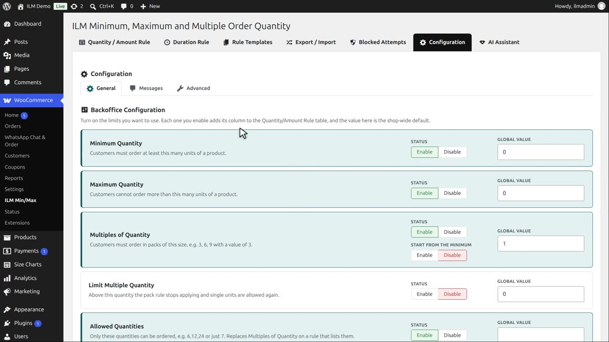
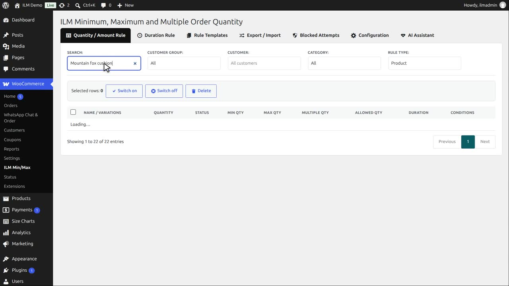
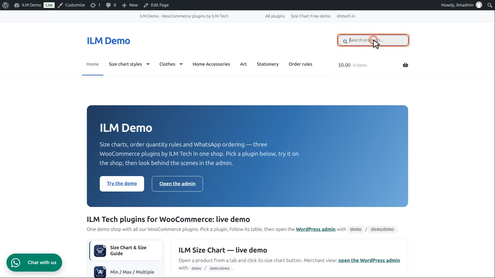
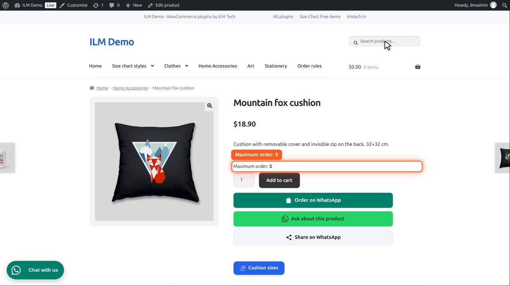
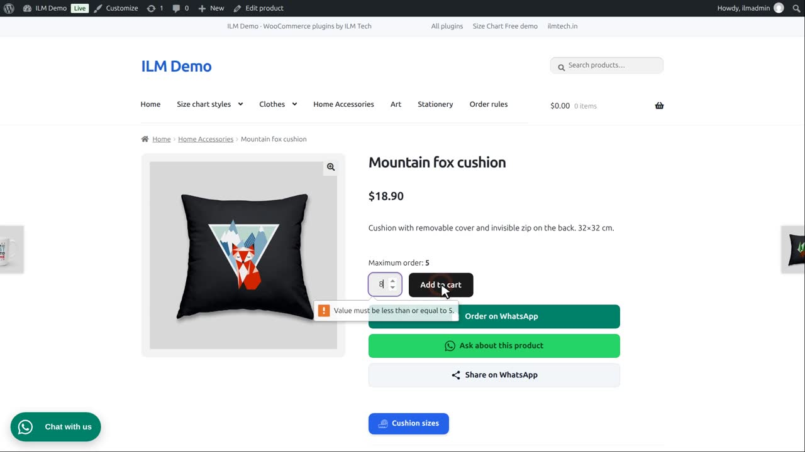
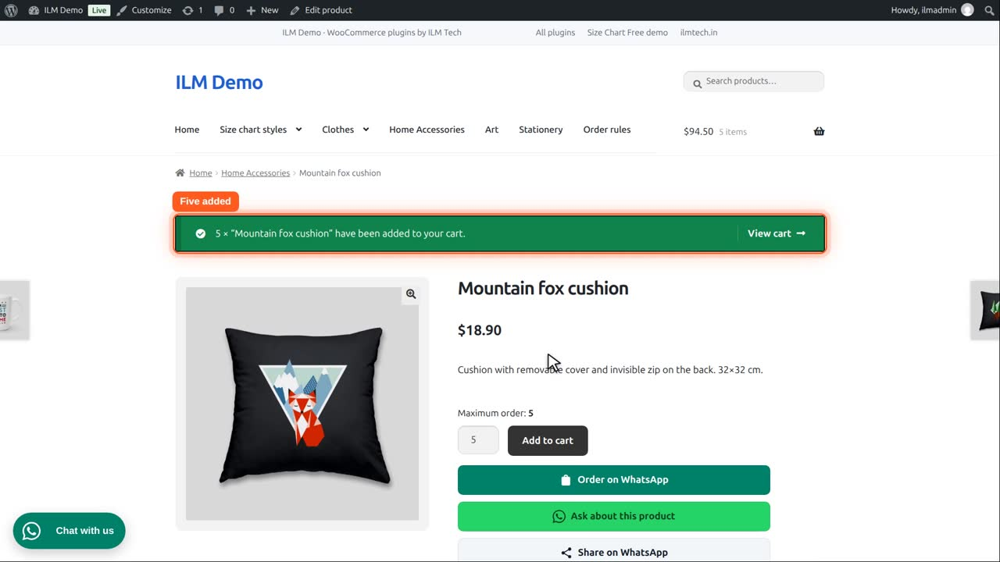
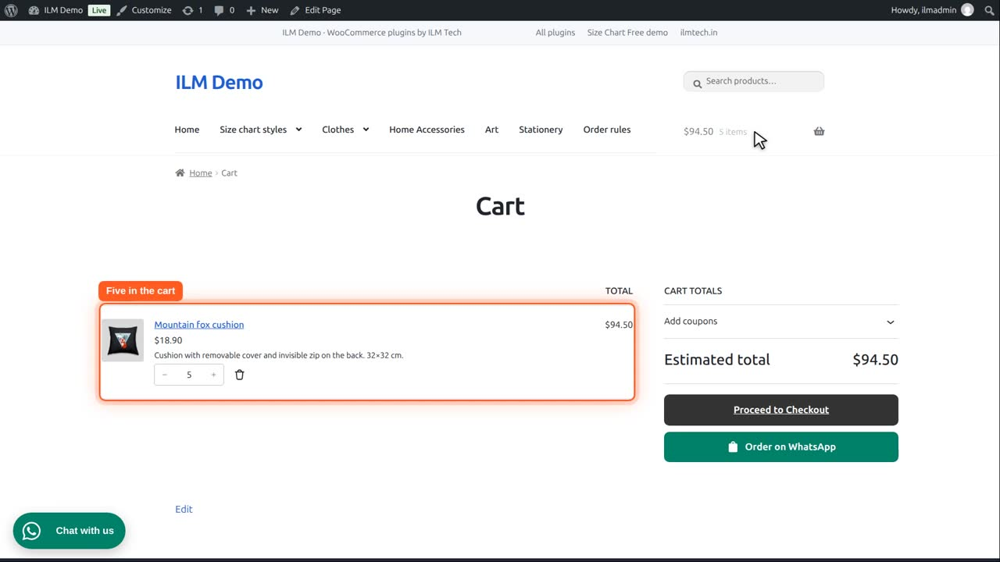
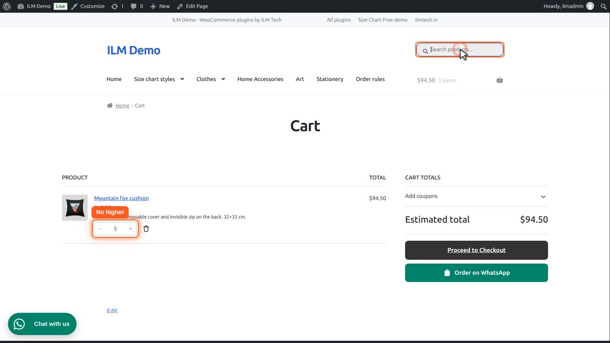

| Setting | What it does |
|---|---|
| Maximum Quantity | Customers cannot order more than this many units of a product. |
On the Configuration tab, Maximum Quantity is enabled. Like the minimum, it adds a Max Qty column to the rule table.

Let us give the Mountain fox cushion a maximum. Search for it.

Type five in Max Qty and click away. The rule is saved.

On the product page, the customer sees: maximum order five.

If they type eight and click Add to cart, the box itself says five is the most.

Five is fine, so that goes into the cart.

In the cart, the quantity is five.

The plus button is greyed out at five, so the cart can never hold more than the maximum.

And if they come back to the product page and add two more, the shop refuses: five are already in the cart, and five is the maximum.